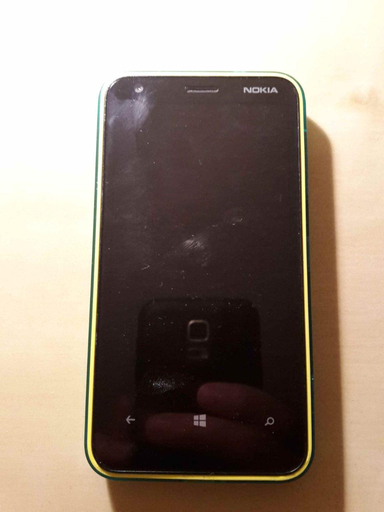

Nokia Lumia 620 (nokia-sand)
|
 The Nokia Lumia 620 powered off. | |
| Manufacturer | Nokia |
|---|---|
| Name | Lumia 620 |
| Codename | nokia-sand |
| Released | 2013 |
| Category | testing |
| Original software | Windows Phone |
| Original version | 8 |
| postmarketOS kernel | 3.4.0 |
| Hardware | |
| Chipset | Qualcomm Snapdragon S4 Plus (MSM8227) |
| CPU | Dual Core 1.0 GHz Krait |
| GPU | Adreno 305 |
| Display | 480x800 TFT LCD |
| Storage | 8 GB |
| Memory | 512 MB |
| Architecture | armv7 |
{kind=link}
| USB Networking |
Broken
|
|---|---|
| Flashing |
Works
|
| Touchscreen | |
| Display |
Works
|
| WiFi | |
| FDE | |
| Mainline | |
| Battery | |
| 3D Acceleration | |
| Audio | |
| Bluetooth | |
| Camera | |
| GPS | |
| Mobile data | |
| SMS | |
| Calls | |
| USB OTG / USB-C Role switching |
Unavailable
|
| NFC | |
| Accelerometer | |
|---|---|
| Magnetometer | |
| Ambient Light | |
| Proximity | |
| Hall Effect | |
| Barometer | |
| Power Sensor | |
| Camera Flash | |
|---|---|
| Keyboard | |
| Touchpad | |
| USB-A | |
| HDMI/DP | |
| Ir TX | |
| Ir RX | |
| Stylus | |
| Haptics | |
| Ethernet | |
| FOSS bootloader | |
|
This device is a Windows Phone. See the Windows Phone page for common tips, guides and troubleshooting steps |
Contributors
Maintainer
Users owning this device
Button Shortcuts
- Hold
Power+Volume downto force the phone to reboot - Hold
Volume downand connect it to the PC to boot it into fastboot mode - Hold
Volume Upand connect it to the PC to boot into the recovery system
Installation
Tools
You will need some tools for Installation:
- wpinternals: This is an open-source tool from an XDA-User. It runs natively on Windows.
- Windows Phone Recovery Tool: This is a proprietary tool from Microsoft. It also runs natively on Windows.
- Win32 DiskImager [1]
- ADB & Fastboot (You do not need the whole Android Studio but the Command Line Tools at the bottom of the page)
- Some files including the rom and iflash-tool
Backup Data
Postmarketos is not ready to use as a daily driver yet. So use a phone you do not need for the development. If you have some data on it, back it up now.
Clean Firmware Install
Use the Windows Device Recovery Tool to install clean Firmware. This is to avoid errors and to gain the FFU-image.
| WARNING: Check you Storage! Open WPInternals with your phone connected to your Windows PC. Reboot it into flash mode, to get more information. There it says, from which manufacturer your storage is. If it is from Samsung, it can cause a brick of your phone. If not, you are good to go. |
Unlock the bootloader
Now use WPInternals to unlock your bootloader. You will need an FFU-image for that. Use the Download page of WPInternals to download it.
Afterward, you need the Emergency Loaders. You can also download the needed files with the Download page.
Then you need the Engineering SBL3 files, which can be found here Now unlock the bootloader.
Connect your phone in mass storage mode
Use WindowsPhoneInternals to switch to the mass storage mode. It could be that you have to give the device a drive letter.
Backup your phone
Use the WindiskImager to Backup your phone (the MainOS Partition). Therefore select the Device, select a folder for your Backup and give it a name. Afterward, switch to Normal Mode again by holding down the volume down and power key together for 10 seconds.
Flash the LittleKernel Bootloader
To boot to Android you need to flash the LittleKernel of Android4Lumia. Therefore use the iflash tool.
From here you can boot into the bootloader and follow the [[I
Troubleshooting
If your device stays black but is connected as QSUSB_DLOAD, use the WindowsDeviceRecoveryTool to make a clean firmware install.
Kernel configuration
- CONFIG_USB_G does not show up, but it is described as required for USB-Networking
- CONFIG_PFT, CONFIG_USE_VFB and CONFIG_KINETO_GAN do not show up in menukonfig. This options should be disabled due to the Kernel configuration guide.